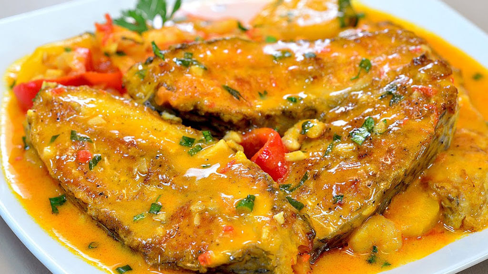
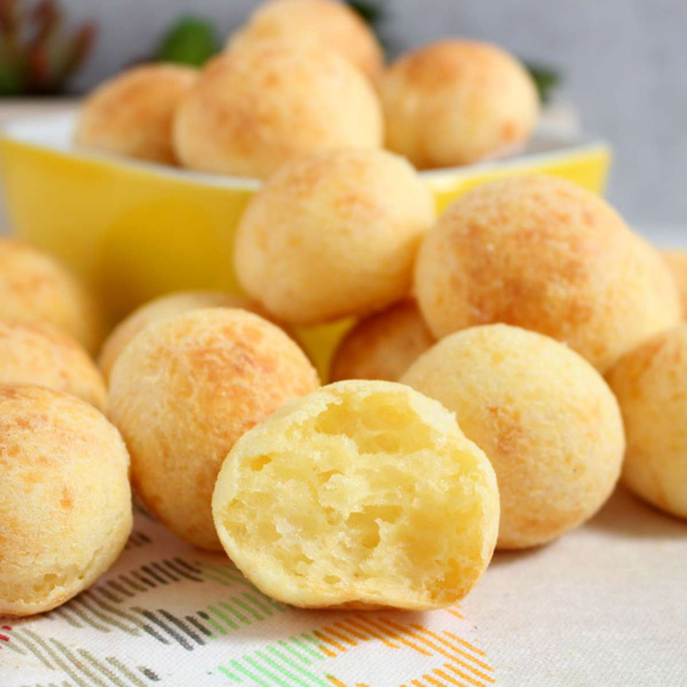
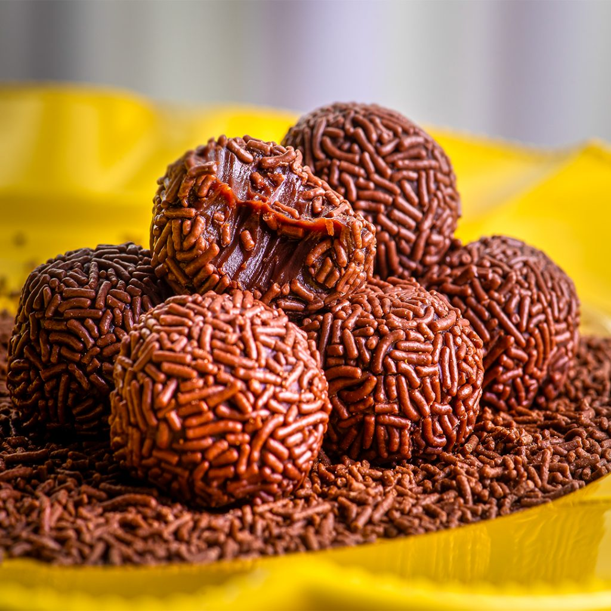

Receitas
Moqueca de Peixe
- Peixe Branco
- Tomate
- Pimentão
- Leite de Coco
- Dendê
Cozinhe o peixe com leite de coco, dendê e os legumes. Tempere com coentro e sirva com arroz.
Pão de Queijo
- Polvilho Azedo
- Leite
- Óleo
- Queijo Minas
- Ovos
Misture todos os ingredientes e faça bolinhas. Asse em forno pré-aquecido por 20 minutos.
Brigadeiro Tradicional
- Leite Condensado
- Chocolate em Pó
- Manteiga
- Chocolate Granulado
Cozinhe o leite condensado com chocolate e manteiga até engrossar. Enrole e passe no granulado.